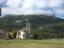
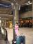

001〜011〜021〜031〜041〜051〜061〜071〜081〜091〜101〜111〜121〜131〜141〜151〜161〜171〜181〜191〜
201〜211〜221〜231〜241〜251〜261〜271〜281〜291〜301〜311〜321〜331〜341〜351〜361〜371〜381〜391〜
401〜411〜421〜431〜441〜451〜
由起子の写真(No461-467)
（写真をクリックすると大きくなります）次へ→
2005年8月18日 18時27分撮影
おばちゃんちの庭で採れた「レッドカレン（果物）」でジャムを作っています。2005年8月17日 17時39分撮影
皆でホースライディングに行きました。由起子は背が足りず可愛いロバ
（名前は「ヌワゼット」）に乗りました。とっても楽しかったよね！！2005年8月16日 11時18分撮影
おばちゃんちのセカンドハウスがある「コーディアック」。美しい自然が
一杯です！！ 隣の畑では牛さんが４頭、のんびり草を食べてます。
2005年8月16日 11時08分撮影
おばちゃんちから徒歩5分程のところにある村の中心地「教会」です。2005年8月15日 21時47分撮影
おばちゃんの孫：オリアン（８歳）とおりがみ遊び：由起子が先生役！2005年8月14日 9時59分撮影
パリのリヨン駅。いっぱいホームがあって、人があふれていました。
私たちはこれからTGVに乗って、グルノーブルを目指します。
2005年8月13日 19時12分撮影
長いフライトでやっとシャルル・ド・ゴール空港に着きました。明日のTGVの
チケットを発券してもらっています。このあと、ホテルのことでハプニングが・・・